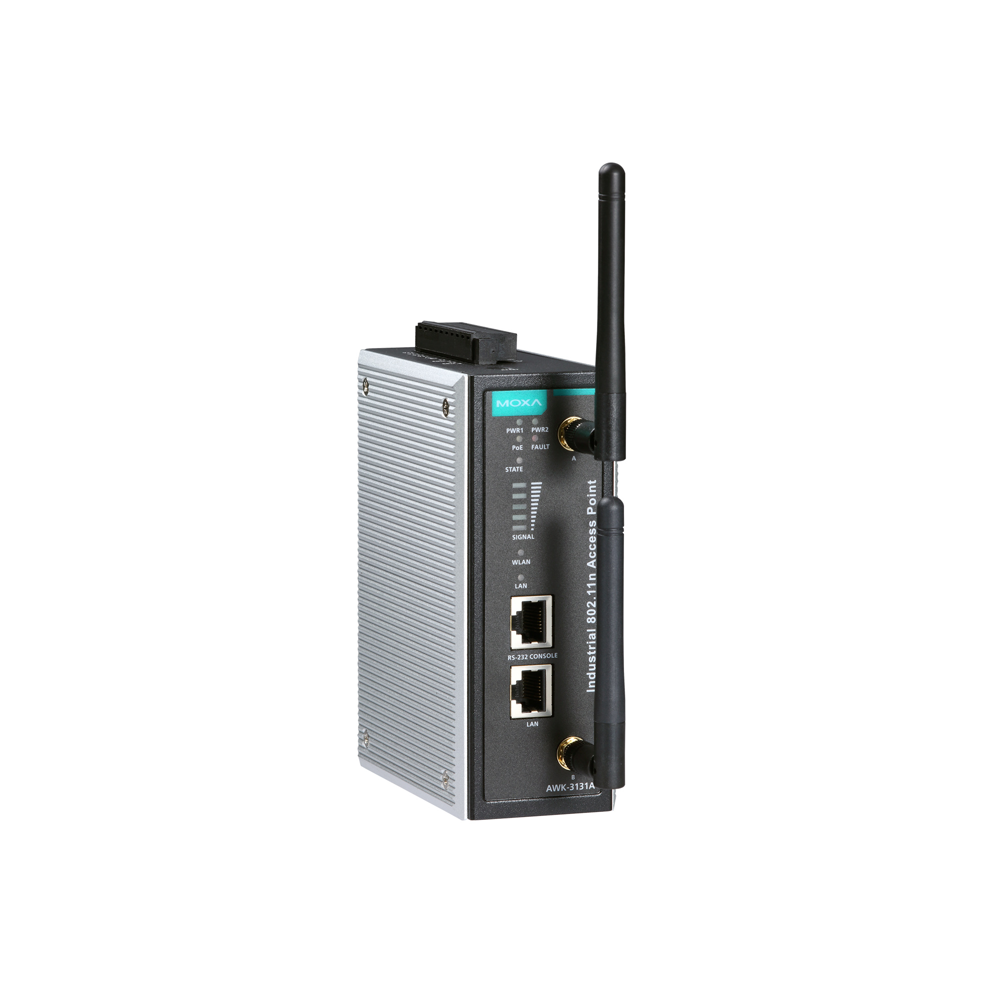
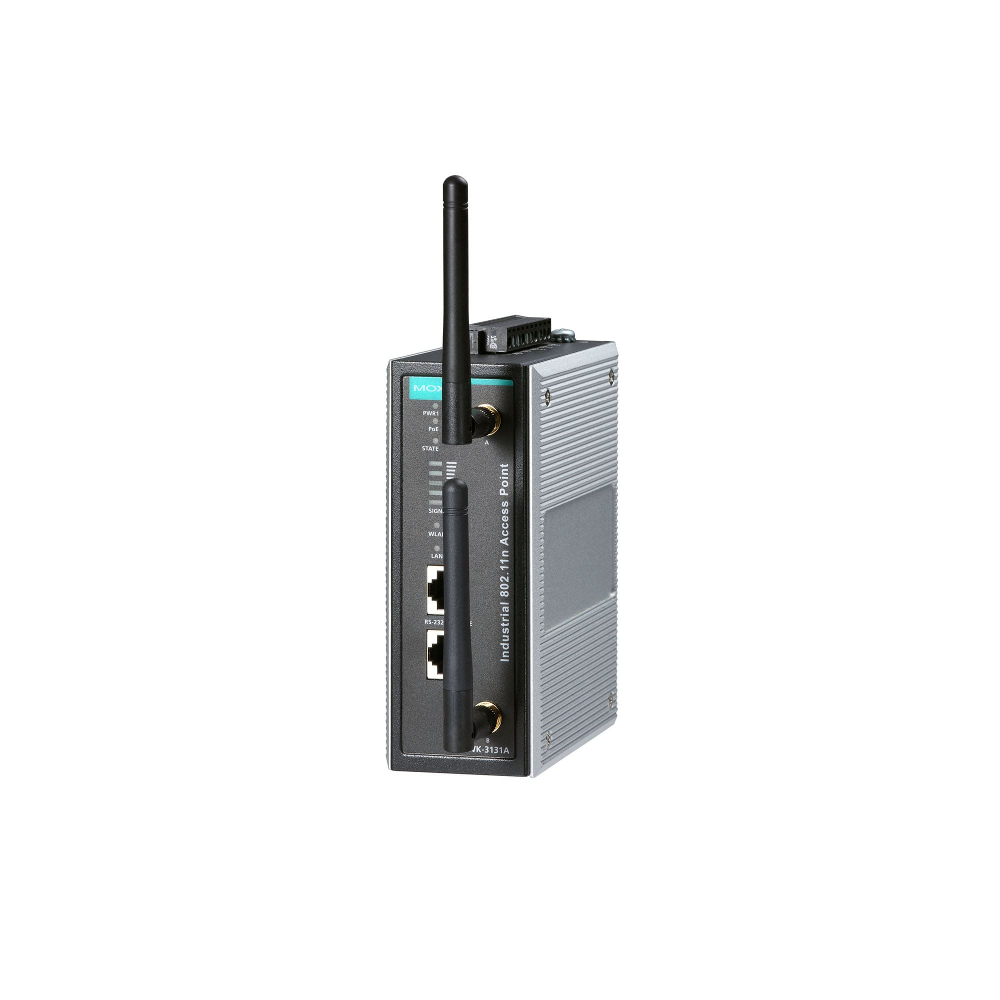
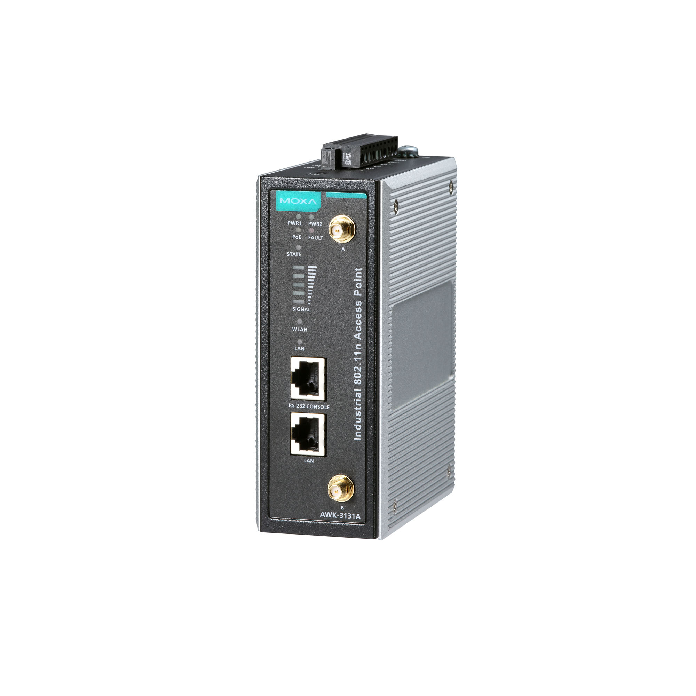
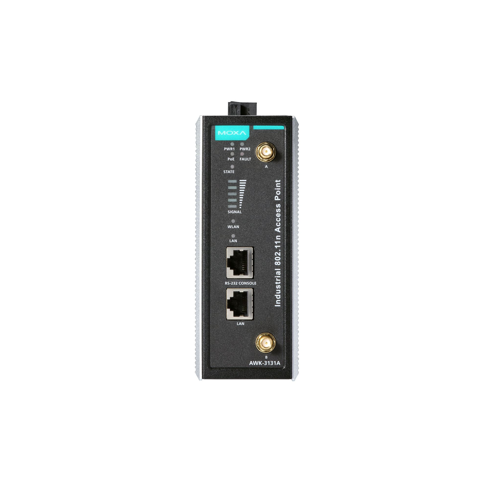

【MOXA】AWK-3131A 系列
IEEE 802.11a/b/g/n 工業無線AP/bridge/client
• 支持IEEE 802.11a/b/g/n AP/bridge/client
• AeroMag 閃配技術，可輕鬆設置和部署
• 基於客戶端的毫秒級Turbo Roaming 快速漫遊
• AeroLink 保護，實現冗餘無線通信
• 網絡地址轉換(NAT) 輕鬆進行網絡設置
• 集成天線和電源隔離保護設計
• 支持-40 至75°C 工作溫度（-T 型號）
• 支持5 GHz DFS 信道
• AeroMag 閃配技術，可輕鬆設置和部署
• 基於客戶端的毫秒級Turbo Roaming 快速漫遊
• AeroLink 保護，實現冗餘無線通信
• 網絡地址轉換(NAT) 輕鬆進行網絡設置
• 集成天線和電源隔離保護設計
• 支持-40 至75°C 工作溫度（-T 型號）
• 支持5 GHz DFS 信道
詳細介紹
最多支持16個讀卡器
AWK-3131A 三合一工業無線AP/bridge/client 支持IEEE 802.11n 技術，數據傳輸速率高達300 Mbps，滿足了業界不斷增長的快速數據傳輸要求。AWK-3131A 的工作溫度、電源輸入電壓、浪湧、ESD 和振動均符合工業標準及認證。兩個冗餘直流雙電源輸入提高了供電的可靠性，AWK-3131A 可通過PoE 供電，實現簡易方便的部署。AWK-3131A 可以在2.4 或5 GHz 頻段上運行，並向後兼容現有的802.11a/b/g 設備，確保您的無線部署能夠滿足未來需求。
商品特色
先進的802.11n 工業無線解決方案
802.11a/b/g/n AP/bridge/client，實現靈活部署
針對長距離無線通信進行軟件優化，支持高達1 km 視距和外接高增益天線（僅適用於5 GHz)
最多可連接60 個客戶端通信
DFS 信道支持更廣範圍的5 GHz 信道選擇，避免現有無線基礎設施的干擾
先進的無線技術
AeroMag 閃配技術，實現零錯誤完成工業應用的基礎WLAN 設置
基於客戶端的Turbo Roaming 快速漫遊 技術實現無縫漫遊，AP 之間漫遊恢復時間 150 ms<（客戶端模式）
支持AeroLink 保護，為AP 和客戶端之間提供冗餘無線連接（恢復時間< 300 ms）
工業級耐用性
集成天線和電源隔離保護設計，提供500 V 絕緣保護，防止外部電氣乾擾
-T 型號支持-40 至75°C 工作溫度，以保障嚴苛環境下的高速無線通信
規格參數
| WLAN接口 | |||||||||||||||||||||||||||||
| WLAN 標準 | 802.11a/b/g/n 802.11i無線安全 |
||||||||||||||||||||||||||||
| 調製類型 | DSSS OFDM MIMO-OFDM |
||||||||||||||||||||||||||||
| 適用於美國的頻段（20 MHz 運行信道） |
2.412至2.462 GHz（11個信道） 5.180至5.240 GHz（4個信道） 5.260至5.320 GHz（4個信道） 5.500 至5.700 GHz（11 個信道） 5.745 至5.825 GHz（5 個信道） |
||||||||||||||||||||||||||||
| 適用於歐盟的頻段（20 MHz 運行信道） | 2.412至2.472 GHz（13個信道） 5.180至5.240 GHz（4個信道） 5.260至5.320 GHz（4個信道） 5.500 至5.700 GHz（11 個信道） |
||||||||||||||||||||||||||||
| 適用於日本的頻段（20 MHz 運行信道） | 2.412至2.484 GHz（14個信道） 5.180至5.240 GHz（4個信道） 5.260至5.320 GHz（4個信道） 5.500 至5.700 GHz（11 個信道） |
||||||||||||||||||||||||||||
| 無線安全 | WEP加密（64位和128位） WPA/WPA2企業版（IEEE 802.1X/RADIUS、TKIP、AES） WPA/WPA2個人版 |
||||||||||||||||||||||||||||
| 傳輸速率 | 802.11b：1至11 Mbps 802.11a/g：6至54 Mbps 802.11n：6.5至300 Mbps |
||||||||||||||||||||||||||||
| 802.11a 傳輸器功率 | 23±1.5 dBm @ 6至24 Mbps 21±1.5 dBm @ 36 Mbps 20±1.5 dBm @ 48 Mbps 18±1.5 dBm @ 54 Mbps |
||||||||||||||||||||||||||||
| 802.11n 傳輸器功率(5 GHz) | 23±1.5 dBm @ MCS0/8 20 MHz 18±1.5 dBm @ MCS7/15 20 MHz 23±1.5 dBm @ MCS0/8 40 MHz 17±1.5 dBm @ MCS7/15 40 MHz |
||||||||||||||||||||||||||||
| 802.11b 傳輸器功率 | 26±1.5 dBm @ 1 Mbps 26±1.5 dBm @ 2 Mbps 26±1.5 dBm @ 5.5 Mbps 25±1.5 dBm @ 11 Mbps |
||||||||||||||||||||||||||||
| 802.11g 傳輸器功率 |
23±1.5 dBm @ 6至24 Mbps 21±1.5 dBm @ 36 Mbps 19±1.5 dBm @ 48 Mbps 18±1.5 dBm @ 54 Mbps |
||||||||||||||||||||||||||||
| 802.11n 傳輸器功率(2.4 GHz) | 23±1.5 dBm @ MCS0/8 20 MHz 18±1.5 dBm @ MCS7/15 20 MHz 23±1.5 dBm @ MCS0/8 40 MHz 17±1.5 dBm @ MCS7/15 40 MHz |
||||||||||||||||||||||||||||
| 傳輸功率 |
|
||||||||||||||||||||||||||||
| 802.11a 接收靈敏度（在5.680 GHz 測量） | 典型值-90 @ 6 Mbps 典型值-88 @ 9 Mbps 典型值-88 @ 12 Mbps 典型值-85 @ 18 Mbps 典型值-81 @ 24 Mbps 典型值-78 @ 36 Mbps 典型值-74 @ 48 Mbps 典型值-72 @ 54 Mbps 注意:由於信道153 和161 的接收靈敏度性能受到限制，建議避免在關鍵應用中使用這些信道。 |
||||||||||||||||||||||||||||
| 802.11n 接收靈敏度（5 GHz；在5.680 GHz 測量） | 典型值-69 dBm @ MCS7 20 MHz 典型值-71 dBm @ MCS15 20 MHz 典型值-63 dBm @ MCS7 40 MHz 典型值-68 dBm @ MCS15 40 MHz 注意:由於信道153 和161 的接收靈敏度性能受到限制，建議避免在關鍵應用中使用這些信道。 |
||||||||||||||||||||||||||||
| 802.11b 接收靈敏度（在2.437 GHz 測量） | 典型值-93 dBm @ 1 Mbps 典型值-93 dBm @ 2 Mbps 典型值-93 dBm @ 5.5 Mbps 典型值-88 dBm @ 11 Mbps |
||||||||||||||||||||||||||||
| 802.11g 接收靈敏度（在2.437 GHz 測量） | 典型值-88 dBm @ 6 Mbps 典型值-86 dBm @ 9 Mbps 典型值-85 dBm @ 12 Mbps 典型值-85 dBm @ 18 Mbps 典型值-85 dBm @ 24 Mbps 典型值-82 dBm @ 36 Mbps 典型值-78 dBm @ 48 Mbps 典型值-74 dBm @ 54 Mbps |
||||||||||||||||||||||||||||
| 802.11n 接收靈敏度（2.4 GHz；在2.437 GHz 測量） | 典型值-70 dBm @ MCS7 20 MHz 典型值-69 dBm @ MCS15 20 MHz 典型值-67 dBm @ MCS7 40 MHz 典型值-67 dBm @ MCS15 40 MHz |
||||||||||||||||||||||||||||
| WLAN 運行模式 | 接入點，客戶端，嗅探器 | ||||||||||||||||||||||||||||
| 天線 | 外部、2/2 dBi、全向性 | ||||||||||||||||||||||||||||
| 天線接頭 | 2 RP-SMA 母頭 | ||||||||||||||||||||||||||||
| 乙太網接口 | |||||||||||||||||||||||||||||
| 標準 | IEEE 802.3，用於10BaseT IEEE 802.3u，用於100BaseT(X) IEEE 802.3ab，用於1000BaseT(X) IEEE 802.1X，用於授權認證 |
||||||||||||||||||||||||||||
| PoE 端口 10/100/1000BaseT(X) 端口（RJ45 接頭） | 1 | ||||||||||||||||||||||||||||
| 乙太網軟件特性 | |||||||||||||||||||||||||||||
| 管理 | DHCP Server/Client、DNS、HTTP、IPv4、LLDP、Proxy ARP、SMTP、SNMPv1/v2c/v3、Syslog、TCP/IP、Telnet、UDP、VLAN、無線搜索工具、MXview、MXconfig | ||||||||||||||||||||||||||||
| 路由 | 端口轉發、靜態路由、NAT | ||||||||||||||||||||||||||||
| 冗餘協議 | RSTP，STP | ||||||||||||||||||||||||||||
| 安全 | HTTPS/SSL、RADIUS、SSH | ||||||||||||||||||||||||||||
| 對時服務 | SNTP Client | ||||||||||||||||||||||||||||
| 安全防護 | |||||||||||||||||||||||||||||
| 過濾 | ICMP、MAC 地址、IP 協議、基於端口 | ||||||||||||||||||||||||||||
| 串口介面 | |||||||||||||||||||||||||||||
| Console 端口 | RS-232，8-pin RJ45 | ||||||||||||||||||||||||||||
| LED接口 | |||||||||||||||||||||||||||||
| LED 指示燈 | PWR1, PWR2, PoE, FAULT, STATE, SIGNAL, WLAN, LAN | ||||||||||||||||||||||||||||
| 輸入／輸出接口 | |||||||||||||||||||||||||||||
| 數字輸入 | 2 最大輸入電流：8 mA +13至+30 V表示狀態1 3至-30 V表示狀態0 |
||||||||||||||||||||||||||||
| 報警功能通道 | 純電阻性負載：1 A @ 24 VDC | ||||||||||||||||||||||||||||
| 按鈕 | 復位按鈕 | ||||||||||||||||||||||||||||
| 機械特性 | |||||||||||||||||||||||||||||
| 外殼 | 金屬 | ||||||||||||||||||||||||||||
| IP 等級 | IP30 | ||||||||||||||||||||||||||||
| 尺寸 | 52.7 x 135 x 105 mm（2.08 x 5.32 x 4.13 英寸） | ||||||||||||||||||||||||||||
| 重量 | 860 g (1.9 lb) | ||||||||||||||||||||||||||||
| 安裝 | 導軌式安裝，壁掛式安裝（帶可選套件） | ||||||||||||||||||||||||||||
| 電源參數 | |||||||||||||||||||||||||||||
| 輸入電流 | 0.56 A @ 12 VDC，0.14 A @ 48 VDC | ||||||||||||||||||||||||||||
| 輸入電壓 | 12 至48 VDC | ||||||||||||||||||||||||||||
| 電源接頭 | 1 個可拆卸4 觸點接線端子 | ||||||||||||||||||||||||||||
| 電源功耗 | 7.2 W（最大） | ||||||||||||||||||||||||||||
| 反接保護 | 支持 | ||||||||||||||||||||||||||||
| 工作環境 | |||||||||||||||||||||||||||||
| 工作溫度 | 標準型號：0至60°C（32至140°F） 寬溫型號：-40至75°C（-40至167°F） |
||||||||||||||||||||||||||||
| 存儲溫度（含包裝） | -40 至85°C（-40 至185°F） | ||||||||||||||||||||||||||||
| 相對濕度 | 5 至95%（非冷凝） | ||||||||||||||||||||||||||||
| 安規認證 | |||||||||||||||||||||||||||||
| EMC | EN 55032/24 | ||||||||||||||||||||||||||||
| EMI | CISPR 32，FCC Part 15B Class B | ||||||||||||||||||||||||||||
| EMS | IEC 61000-4-2 ESD：接觸：4 kV；空氣：8 kV IEC 61000-4-3 RS：80 MHz至1 GHz：10 V/m IEC 61000-4-4 EFT：電源：2 kV；信號： 1 kV IEC 61000-4-5 Surge：電源：2 kV；信號：1 kV IEC 61000-4-6 CS：3 V IEC 61000-4-8 PFMF |
||||||||||||||||||||||||||||
| 無線電 | EN 300 328、EN 301 489-1/17、EN 301 893、FCC ID SLE-WAPN008、ANATEL、MIC、NCC、RCM、SRRC、WPC、KC、RCM | ||||||||||||||||||||||||||||
| 安全 | EN 60950-1，UL 60950-1 | ||||||||||||||||||||||||||||
| 振動 | IEC 60068-2-6 | ||||||||||||||||||||||||||||
| MTBF | |||||||||||||||||||||||||||||
| 時間 | 749,476 小時 | ||||||||||||||||||||||||||||
| 標準 | Telcordia SR332 | ||||||||||||||||||||||||||||
| 保修 | |||||||||||||||||||||||||||||
| 保存期限 | 5年 | ||||||||||||||||||||||||||||